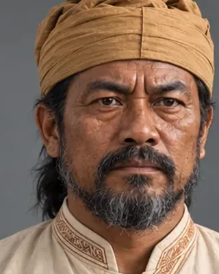

Khenphung Borgohain
c. 1490 · Borgohain

An Ahom Borgohain in the project catalogue, ambushed by the Tangshu Nagas.
Record confidence: low.
Sources
- project catalogue (catalog.json / Assam_History_Characters.csv)
Open interactive profile
Related scenes